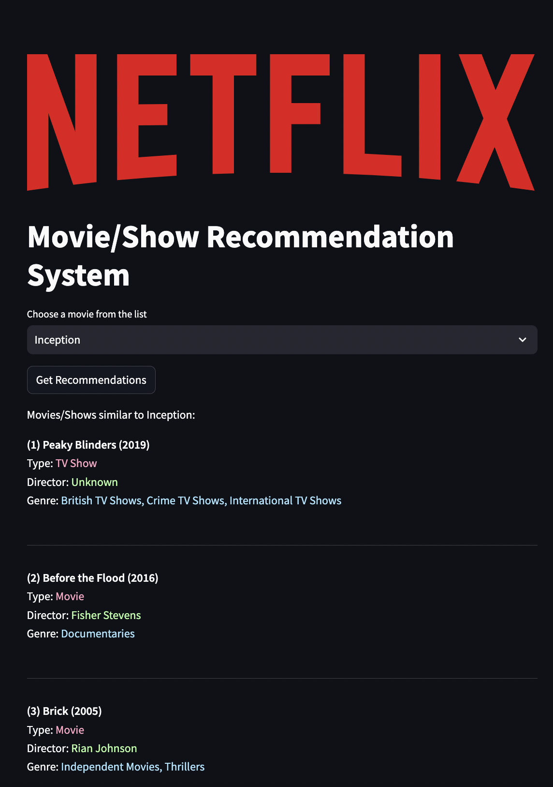

Netflix Movie Recommendation


Title
Netflix Content Recommender System
Description
The project aimed to design a recommendation system for Netflix content, be it movies or TV shows. Starting with data cleaning and preprocessing, missing values in various columns were handled, and date-related features were engineered. In the exploratory data analysis phase, the distribution of content types and ratings was visualized, providing insights into the nature of available content.
Feature engineering led to the creation of the content feature, a combination of several textual attributes. The recommendation system transforms this feature into a TF-IDF matrix and calculates cosine similarity between items. This enables personalized recommendations based on content similarity.
Skills
- Data cleaning and pre-processing
- Exploratory Data Analysis (EDA)
- Data visualization: bar chart
- Feature engineering
- Content-based recommendation system
- Natural Language Processing (NLP) with TF-IDF Transformation
- Cosine Similarity Calculation
- Interactive Web Application Development with Streamlit
Tools
Notebook
Contribute to minjonyfilm/netflix-content-recommender-system development by creating an account on GitHub.
github.com/minjonyfilm/netflix-content-recommender-systemResults

- Developed a content-based recommendation system with an interactive web interface, capable of suggesting similar movies or TV shows based on user selection.
- Uncovered insights into the nature of content available on Netflix through data visualization.
- Successfully transformed textual content attributes into a format suitable for similarity computations, paving the way for personalized content recommendations.
- Enhanced the accessibility and usability of the recommendation system through the integration of Streamlit, providing a seamless experience for users to interact with the model.